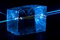

photon

Definition: A photon (from Ancient Greek φῶς, φωτός (phôs, phōtós) 'light') is an elementary particle that is a quantum of the electromagnetic field, including electromagnetic radiation such as light and radio waves, and the force carrier for the electromagnetic force. Photons are massless, so they always move at the speed of light in vacuum, 299792458 m/s (or about 186,282 mi/s). The photon belongs to the class of boson particles.
Source: Wikipedia
Wikipedia Page
Wikidata Page
Occurs in: